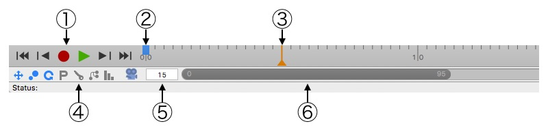
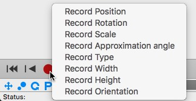

タイムライン

タイムラインは、Cheetah3D でアニメーションを作るためのメインコントロールです。DVD プレーヤーを操作できるなら、Cheetah3D のアニメーションコントロールも操作できるはずです。特に主なアイコンは、お使いの DVD プレーヤーと同じでしょう。
Cheetah3D では、ほぼすべてのオブジェクト、タグ、そしてマテリアルをアニメーションさせる事ができます。ただ、出力解像度サイズのような、いくつかのパラメータをアニメーションさせる事はできません。しかし、ムービーの解像度サイズをアニメーションさせる事に、それほど意味はないでしょう。
Cheetah3D はアニメーションを作成するのにキーフレーミングと呼ばれるテクニックを使用しています。これは、実際に変化した位置でのみオブジェクトのプロパティを記録するという事です。いったんオブジェクト、タグ、そしてマテリアルのプロパティを記録すれば、キーが作成されます。このキーによって、どこでプロパティを記録したかを確認する事ができます。２つのキーの間で、Cheetah3D はオブジェクトのプロパティを補間します。
このテクニックは、オブジェクトの最初と最後のポイントを記録するだけでアニメーション全体の作成を可能にします。
タイムライン コントロール:
上のスクリーンショットに示されている、タイムラインの主な７つの部分から説明しましょう。
- タイムラインの左にある小さいアイコンの一団は、アニメーション作成に最もよく使われるコマンドを含んでいます。これらは "アニメーション" メニューでも見つける事ができます。
アニメーションの最初のフレーム（アニメーションインターバルバーの最初）へ移動１つ前のフレームへ移動 OpenGL アニメーションプレビュー（3D ビュー上で）を再生 
選択中のオブジェクト（タグ・マテリアル）の設定を記録 
１つ次のフレームへ移動 
アニメーションの最後のフレーム（アニメーションインターバルバーの最後）へ移動. - 青い四角は記録されたキーを示しています。
- この小さいハンドルは、現在のアニメーション時間を示しています。左や右にドラッグする事で、現在のアニメーション時間を変更できます。
- この記録マスク設定で、記録ボタンを押した時にどのパラメータが記録されるかを決めておく事ができます。デフォルトでは、位置、スケール、回転が記録されるように設定されています。
 位置パラメータを記録
位置パラメータを記録スケールパラメータを記録 
回転パラメータを記録 全てのパラメータを記録 
自動記録を有効 有効な場合、Cheetah3D は変更したパラメータに自動的にキーを打ちます。 選択オブジェクトのすべての小オブジェクトを対象に記録 
変更した値のみを記録
もしオブジェクトの１つのパラメータを記録したい場合は、記録ボタン上で右クリックし、記録したいパラメータをコンテクストメニューから選択します。
 - 現在のアニメーションフレーム
- アニメーション全体の秒数（このフィールドは削除されました、シーン全体のアニメーション時間の長さは、テイクマネージャで確認・編集できます。）
- このアニメーション（プレビュー）インターバルバーは、（実際にプレビュー／レンダリングされる）アニメーションの初めと終わりを示しています。もしプレビュー／レンダリングされるアニメーションの間隔を変更したい場合、バーの左端／右端／バー自体を左右にドラッグします。
使い方
アニメーションを作成するには、次の手順を参照してください:
- まずアニメーションさせたいオブジェクト、タグ、またはマテリアルを選択します。
- キーを記録したい時間（フレーム）に現在のアニメーションフレームをセットします。
- オブジェクト、タグ、またはマテリアルのパラメータを設定します。
- 記録アイコンをクリック（特定のパラメータのみを記録したい場合は、右クリックしてコンテキストメニューから選択）し、新しいキーを記録します。
- アニメーション全体を記録するまで、2 に戻って続けます。
例
ハローワールドチュートリアルをチェックして、最初と最後の２つのキーを含むシンプルなアニメーションをどのように作成するかを見てください。